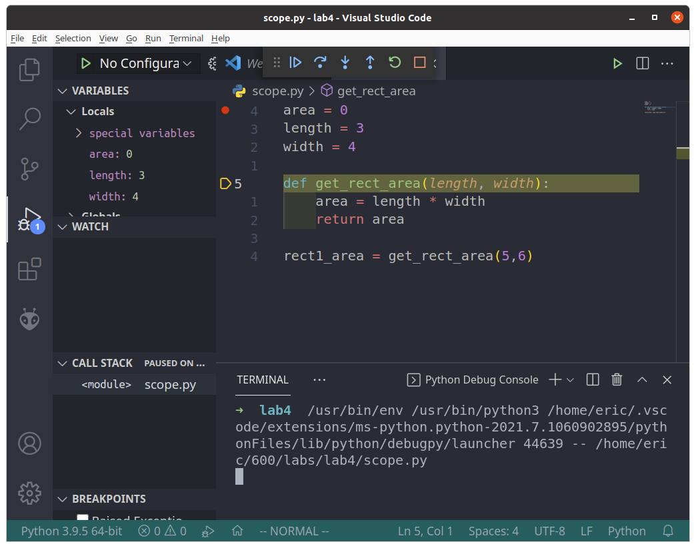
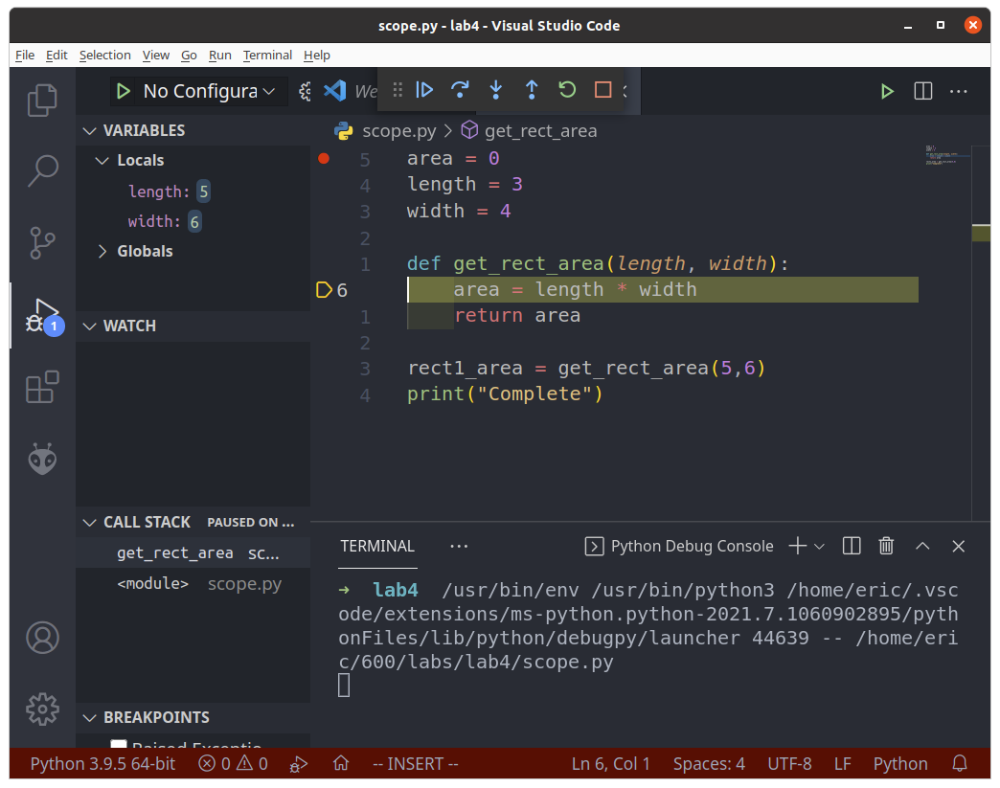
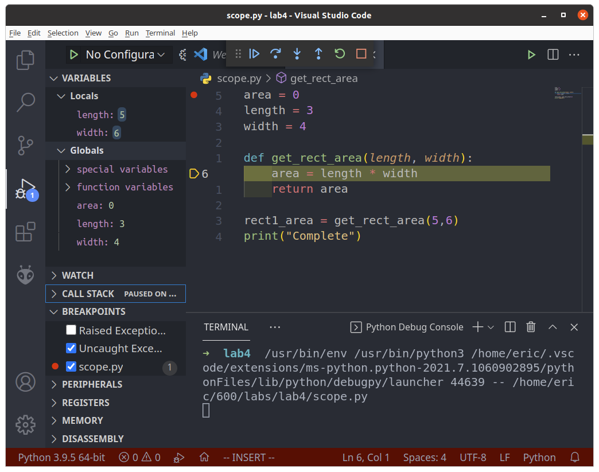
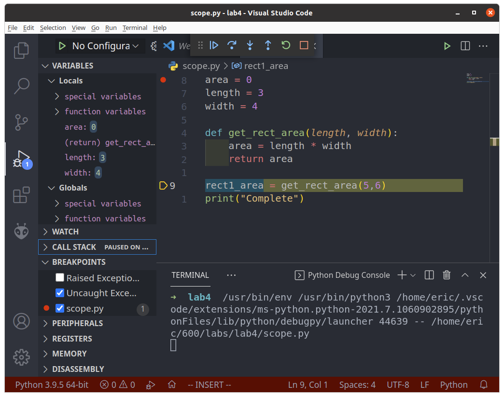

![]()
In this lab, you will:
What is the goal of programming? A lot of times we create programs in order to automate repetitive tasks. To that end, in this lab we will introduce functions, which are used to organize code that will be run several times. Additionally we will look at other methods of writing code that is meant to be easily automated.
Of course, automation is a double-edged sword. Automating tasks means that we can also automate mistakes. In this lab we will also look at ways of testing conditions and ensuring that we are working with good input.
Let’s break the guessing game that we created in the last lab. Run lab3d.py and try the following:
Guess a number between 1 and 10: gorilla
Traceback (most recent call last):
File "/home/eric/PRG600/labs/lab3d.py", line 11, in <module>
...
ValueError: invalid literal for int() with base 10: 'gorilla'When we try to convert “gorilla” into an integer, Python gets confused and assumes that there has been an error. We have not used input validation to test our user’s input. In the real world input validation is incredibly important whenever we are working with user-facing input. Not only will users try silly things like ‘gorilla’, but oftentimes hackers will be testing for vulnerabilities.
Right now what we want to do is avoid all exceptions, if possible. Which means that valid input for this game must adhere to the following rules:
For the first test, we’re in luck: there’s a method to check this contained in each string.
user_input = input("Enter a number: ")
if user_input.isnumeric():
print("This only contains characters between 0 and 9.")
else:
print("This will cause an exception if we try to convert to an integer.")This function is different from print() and round(), instead of entering something inside the parentheses we attach it to our string with a .. This is because isnumeric() is a method of the string object. As you progress with programming, you will learn more about objects. For now, just know that the syntax is slightly different.
For rules 2 and 3, we can simply use comparisons like we have already learned. So three criteria must be met before we try to accept this user input. You might be tempted to use three nested if statements like this:
if user_input.isnumeric():
if int(user_input) > 0:
if int(user_input) < 11:
print("This is valid input.")There is a better way.
Let’s introduce some programming logic: we can link two conditions together by using and between them. and requires that both be true before it will return true. This table is called a Truth Table and is widely used to explain boolean logic.
AND
| First Condition | Second Condition | Final Result |
|---|---|---|
| 0 | 0 | 0 |
| 0 | 1 | 0 |
| 1 | 0 | 0 |
| 1 | 1 | 1 |
Notice the only way that ‘Final Result’ can become ‘1’ is if both conditions equal 1.
Now consider every ‘0’ to be False, and every ‘1’ to be True.
AND
| First Condition | Second Condition | Final Result |
|---|---|---|
| False | False | False |
| False | True | False |
| True | False | False |
| True | True | True |
This is perfect for our input validation, since we only want to accept the user’s guess if it’s both a number and greater than 0 and less than 11.
if user_input > 0 and user_input < 11:
print("Input accepted.")If you really want to be fancy, you can use one of Python’s improved numerical comparisons as well: 0 < x < 11. Note that this usually doesn’t work in other languages.
if user_input.isnumeric() and 0 < int(user_input) < 11:
print("Input accepted.")here are many other logical operators, but most of what we do can be accomplished with and, or and not.
OR
| First Condition | Second Condition | Final Result |
|---|---|---|
| 0 | 0 | 0 |
| 0 | 1 | 1 |
| 1 | 0 | 1 |
| 1 | 1 | 1 |
Using or will return a ‘true’ if any of the conditions are true.
NOT
| First Condition | Final Result |
|---|---|
| 0 | 1 |
| 1 | 0 |
not will invert a true/false.
lab3d.py file and rename it to lab4a.pyEnter a number between 1 and 10: 1
Sorry, try again.
Enter a number between 1 and 10: hamburger
Error: not a number or out of bounds.
Enter a number between 1 and 10: 100
Error: not a number or out of bounds.
Enter a number between 1 and 10: 6
Correct! You winFunctions in programming are derived from functions in mathematics. You are probably familiar with the following syntax:
f(x) = x2 + 3x + 1
The idea with this is that we can define x differently and get a different value returned in each case.
f(3) = (3)2 + 3(3) + 1
f(3) = 19
The input changes, and the output changes. But the relationship between input and output, defined by the equation, does not change.
In programming, we are often performing identical processing on many different inputs. Consider an example where we are processing many files in a similar way.
Another example would be in computer graphics, where we need to perform many complex calculations in order to correctly render light reflecting off a window. Each frame of animation is going to need to run this function, with a different result each time.
This is where we would make use of a function. To implement the example above, we would enter it like this:
def calculation(x):
"an example of a calculation"
return x ** 2 + (3 * x) + 1def line is called a function definition. Here we can name the function, and name its parameters.return line defines what data your function will produce. As soon as Python encounters a return instruction, it will stop running code in your function!def calculation(x):
"an example of a calculation"
return x ** 2 + (3 * x) + 1 # after this line, we exit the function and return to the main script.
print("This will never get printed.")Once you’ve defined a function, you’re only halfway finished. You will have to call the function inside your code. Here is an example of this using the Python interpreter. We have already typed in our function definition.
>>>> y = calculation(3)
>>>> print(y)
19
>>>> print(calculation(4))
29In the first example, we are storing the output returned by the function into a variable called y. The second example combines both calling the function and printing its return value into one step. This sort of combination of steps is common, but can lead to confusion. When things go wrong, be sure to break your instructions into more steps (or use the debugger).
The code that you eventually create will be doing different things, so it’s hard to provide ‘golden rules’ that are always going to be relevant. However, There are some general good practices that you should follow:
Look at the following code below. Each function is adhering to general best practices. For each function:
When you’re finished, save your code as lab4b.py.
from random import randint
def rtrn_area(length, width): # Put your in-line comment here
"Put your function level docstring here"
return length * width
rect = rtrn_area(5, 3)
# call the function again with new values
def print_all_caps(name, age): # Put your in-line comment here
"Put your function level docstring here"
cap_name = name.upper()
print('THIS PERSON\'S NAME IS ' + cap_name + ' AND THEY ARE ' + str(age) + ' YEARS OLD!!!')
print_all_caps('eric', 41)
print_all_caps('melissa', 40)
# call the function again with new values
def get_rando(): # Put your in-line comment here
"Put your function level docstring here"
return randint(1, 101)
lucky_num = get_rando()
# call the function again with new values
def is_odd(num): # Put your in-line comment here
"Put your function level docstring here"
if num % 2 == 1:
return True
else:
return False
print(is_odd(13))
print(is_odd(get_rando()))
# call the function again with new valuesPortability refers to being able to run functions in a new Python program, by importing functions in much the same way we would import functions from the standard library.
In a new file called importer.py, enter the following code. Make sure that importer and lab4b are in the same directory.
from lab4b import is_odd
print(is_odd(27))What you will notice, however, is all of the print statements and function calls you created in lab4b.py are run when you imported the file. What we need is a way to prevent code from running when the file is being imported versus when it is executed.
Open lab4b.py again. After the functions definitions, put the following line:
if __name__ == "__main__":
print(is_odd(13))
# put the rest of your function calls here.lab4b.py again. You will notice that when you run the script as a standalone file, the lines inside __name__ == "__main__" are executed. We can call this block main.lab4b.py and run importer.py again. You should see no output printed to the screen whatsoever. Check that function calls are now in main.The other aspect of making functions portable is making sure they can be run without needed to access any variables that are global, that is, declared outside of the function itself. Any variables used inside the function should be passed in as arguments.
You might be confused about these terms, they both seem to refer to the ‘input’ of functions. Are they the same?
No. Parameters are part of the function definition, and define variables inside the function. Parameters are considered local. In the example below, diameter is considered a parameter. (Also note that we are importing the value of Pi from another useful Python module).
import math
def circle_area(diameter):
return math.pi * diameter ** 2Arguments are part of a function call. Their scope is considered global. These are values that are outside the function. In the example below, the number 26 is considered an argument.
area = circle_area(26)This introduces us to an important concept called scope.
Scope refers to where a variable exists. Functions are ‘born’ when they are called, and ‘die’ when they return a value or reach the end of their code block. The ‘scope’ of their parameters is inside the function, and when the function ‘dies’ the value of those parameters are lost. Similarly, when you define variables outside of functions, they are considered to have global scope. The value of those variables are lost only when the program exits.
One confusing issue is that local and global variables can have the same name, but still be considered completely different variables with different values. To illustrate this, be sure to use VSCode to run the example below. Put a breakpoint on the line with area = 0 and step through the code as we demonstrated in the last lab.
area = 0
length = 3
width = 4
def get_rect_area(length, width)
area = length * width
return area
rect1_area = get_rect_area(5,6)
print("Complete")As you step through the code, you will see area, length and width defined in the ‘Variables’ box.

When you reach the function call, make sure to use the Step Into button rather than Step Over. “Step Into” will enter into a function, whereas “Step Over” will skip over it.

In the Variables box, you will see that the values for length and width have changed. What happened to the previous values? The answer is that they are still there, only they aren’t visible at the moment. Click on the “Globals” Drop-Down.

There exist two lengths: one local (equals 5) and one global (equals 3). What happens inside the function, stays inside the function. Go ahead and use “Step Over” or “Step Through” to finish running the code.

Once we exit the function, the local version of length width and area revert to their previous values. The function has died, and the paramter values are lost. Only the return value is preserved, and this is assigned to the variable rect1_area.
What should we learn from this example?
x, debugging your code becomes a nightmare.Let’s say that your company, for whatever reason, needs a tool to return many areas of circles using a command line tool. Here are the requirements:
circle_area that has radius as its parameter and returns the calculated area.if __name__ == "__main__":).Program was cancelled.Circle Area Calculator
Enter a radius between 0 and 1999. Press Enter to exit: 2
Radius: 2. Area: 12.566370614359172.
Enter a radius between 0 and 1999. Press Enter to exit: ten
Error: ten is not a number.
Enter a radius between 0 and 1999. Press Enter to exit: 17
Radius: 17. Area: 907.9202768874502.
Enter a radius between 0 and 1999. Press Enter to exit: 2001
Error: 2001 is out of range.
Enter a radius between 0 and 1999. Press Enter to exit:
Exiting...Save the file as lab4c.py and submit it as part of your lab.
challenge4.py.rtrn_slope. This function will take 4 integers and return a float.rtrn_slope function inside your challenge4.py script. Use hard-coded values to test. For example, rtrn_slope(1, 1, 3, 3) should return a slope of 1.0.input() to get these values from the user. Remember to validate the user input!. Values outside of the acceptable range should cause an error.input() statement inside a while loop. Your script should now calculate the slope of the previous value along with the current value. You can create the option to quit if you wish, or use Ctrl+d to terminate the program at any time.Please note I omitted the input validation step from this sample, however your code should have it!
Enter the starting X value: 1
Enter the next Y value: 1
Enter the new X value: 3
Enter the new Y value: 3
Slope is: 1.0
Enter the new X value: 3
Enter the new Y value: 3
Slope is: 0.0
Enter the new X value: 5
Enter the new Y value: 4
Slope is: 0.5
Enter the new X value: 0
Enter the new Y value: 1
Slope is: 0.6
Enter the new X value: 3
Enter the new Y value: 0
Slope is: -0.3333333333333333You can download the check script here.
lab4a.pylab4b.pylab4c.pylab4-check-output.txtchallenge4.py